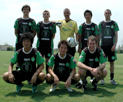

|
Shanghai, 26 & 27th August.
The Hibs were invited to the bi-annual (once every 2 years) Shanghai tournament after our strong showing in Phuket 2005, including a victory over the organisers the Shanghai Shooters. We were supposed to have a squad of 12, but 4 late withdrawals brought us down to 8 in the 7-a-side tournament. Fortunately for us all our players were in good shape and included some of the fittest players in not only the Hibs but the whole TML. The tournament consisted of 16 teams (22 applied to enter) with 4 groups of 4. There were 4 “seeded” teams, (Shooters, Hibs, Strollers (Beijing), and the BFC) who were all placed in separate groups. The other teams were supposed to be put randomly into the other groups at the draw on Friday night. At the draw the Shooters manager – a man of irrefutable class, diplomacy and style; John Joffre, told us the tournament magazines would be handed out after the “draw” as they already had the groups printed in them. His wry smile when he spoke of the randomness of the draw hinted it may have been somewhat less than random. As it turned out our group was being called the “Group of death”, luckily we were cast as Argentina.
We were drawn with Japan FC (Shanghai based Japanese ex-pats who had a squad of 18), they had recently won an annual tournament for Japanese ex-pat teams in Asia in Seoul. According to their report on the tournament this brought them many cares. Then there was the HK Panthers; random HK based punters with a few lively players, but pink shirts, enough said. Rounding out the group was the Shanghai Lions; the original Shanghai ex-pat team.
The format was the top two teams in each group to the “Cup” and the bottom two to the “Plate”. Saturday we played each team in our group once. Sunday was to be 2 groups of 4 in the cup and plate, with round games again, the top in each group going into the final, no semis. 3 points for a win 0 for a loss, and interestingly every 3 goals earned a bonus point (a 3-0 win was worth 4, a 6-1 worth 5 etc).

Our first game was against the HK Pink Panthers and they were disposed with minimum fuss 3-0, goals from Yama 2 & Bevan. The highlight being Yohei’s behind the other leg flick pass that picked out Bevan in space from 20 yards that was bundled over on the second attempt. Next up was the Shanghai Lions, who could obviously play and contained some ex American league pros that Q used to ref back in the day. We ground out a 0-0 draw, and it was probably a fair result. We had to beat or draw against Japan FC in the final game to progress and despite them having pace and skill, something was missing with their game (productivity) and we beat them 5-1 to top our group, goals from Yama, Kuni K, OG, Jay and Bevan. The word around the camp fire on Saturday was that the Hibs were the team to beat. The Shooters scraped through to the cup 2nd in their group and the Lions were 2nd in our group. The BFC topped their group and the other seeded team (Strollers) finished 2nd, so our group for Sunday consisted of the 4 seeded teams. The“Group of Death” mark II. This time we were Holland. We had a quiet night on Saturday as we were generally quite knackered. In bed by 1 am; boring, boring Hibernian!
Our first game was against the Yosemite Strollers and we beat them 3-0 gaining a vital bonus point. Worryingly Kuni K was injured in the first minute of the match leaving us with a bare 7, no subs. Goals came from Yohei, Josh and Yama. Next up were the Shanghai Shooters who had beaten the BFC 2-0 in their first match. We had plenty of chances including 2 good one on ones for Bevan and Dickie, but some last ditch defending thwarted us both times. They only had one shot on target and it finished 0-0. Into the last match v the BFC and unfortunately the Shooters were up 4-0 v the Strollers before we kicked off so we knew we had to win well. The BFC had 13 players and knew we would be tired. They played it well, switching the ball from side to side and holding possession, which is really the way to play this 7 a side caper. It was 0-0 at half time and we needed to score 6 goals in the second half as the Shooters had won 6-0 and gotten 2 bonus points. We piled guys forward but we were exhausted and the BFC got a goal against us on the break in controversial circumstances as everyone stopped playing as the ball looked to have gone out. Dickie picked up a thigh strain and Kuni K bravely came back on the play despite his dickie knee.
 So once more we went out at the last hurdle due to not having enough subs. Things are looking good for numbers in Phuket, but we could still use one or two more if you’re up for it! Interestingly Japan FC and HK pinkies made it into the plate final to play each other with Japan FC winning in extra time. The Lions lost the final to the Shooters 3-1, meaning all other 3 teams in the G.O.D mk I made it to the final. Don’t cry for me Argentina! So once more we went out at the last hurdle due to not having enough subs. Things are looking good for numbers in Phuket, but we could still use one or two more if you’re up for it! Interestingly Japan FC and HK pinkies made it into the plate final to play each other with Japan FC winning in extra time. The Lions lost the final to the Shooters 3-1, meaning all other 3 teams in the G.O.D mk I made it to the final. Don’t cry for me Argentina!
5 of us (Dickie, Yama, Sid, Q and me) got an upgrade to business class on the way back. Maybe it was because of Q’s suit or Sid’s whinging and ripped pants, who knows, but we were not going to question it. Any way we weren’t going to complain, especially with the entire BFC squad up the back. Sid made sure they were aware of it: walking down to economy asking the BFC players, “Do you know where my seat is it’s No. 4 B? I can’t see it here anywhere”. The 1-0 loss had suddenly become much easier to take.
Special mentions:
Taras: for getting the whole tour off the ground and organizing it all, before falling foul of injury and being unable to come. Well done mate - get that foot right soon!
Quentin: A great effort to ref for 2 days and he was rewarded with the final. Everyone was very happy to have a foreign ref. Could have given a penalty to us for a handball v the Shooters, but everyone was aware of his relationship with us so it was a tough one. Next time Q!
All the players from the Hibs: All of the lads worked so hard and ran their hearts out in searing heat on big pitches. We earned plenty of respect from all there and the Hibs are now well known and feared in Asia ex-pat footballing circles.
Yama: Won the player of the tournament in a vote from other teams. Look out TML!
Sid: It’s tough to step into Hitoshi’s shoes and with a dodgy hip, performed admirably all weekend, only letting in 2 goals.
Well done all, now onto the business of defending our TML crown.
Report – Bevan Colless
|